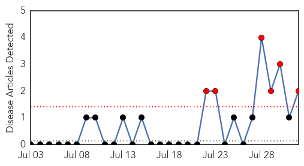
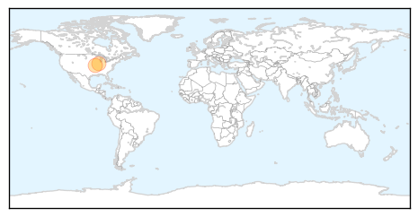

West Nile Virus
30-Day Web Trend
10 alerts, 3 warnings

30-Day Twitter Trend
4 alerts, 0 warnings

Article Locations
Article Confidences

Top Articles:
- 0.989
- First West Nile death
- 0.973
- Cass County finds West Nile Virus in mosquito pool
- 0.970
- Larimer resident hospitalized for West Nile virus
- 0.848
- West Nile virus found in Springfield
- 0.818
- Loveland resident hospitalized for West Nile
- 0.813
- West Nile mosquitoes found in Longmont
- 0.771
- WCAX.COM Local Vermont News, Weather and Sports-
- 0.648
- West Nile Virus Vaccine Ready For Human Trials
- 0.578
- West Nile Virus Forces Suffolk County To Restrict Camping In 1 Park « CBS New York
Top Tweets:
-
No tweets found for Aug 01, 2015
Mumps
30-Day Web Trend
6 alerts, 0 warnings

30-Day Twitter Trend
0 alerts, 0 warnings

Article Locations
Article Confidences

Top Articles:
Top Tweets:
-
No tweets found for Aug 01, 2015